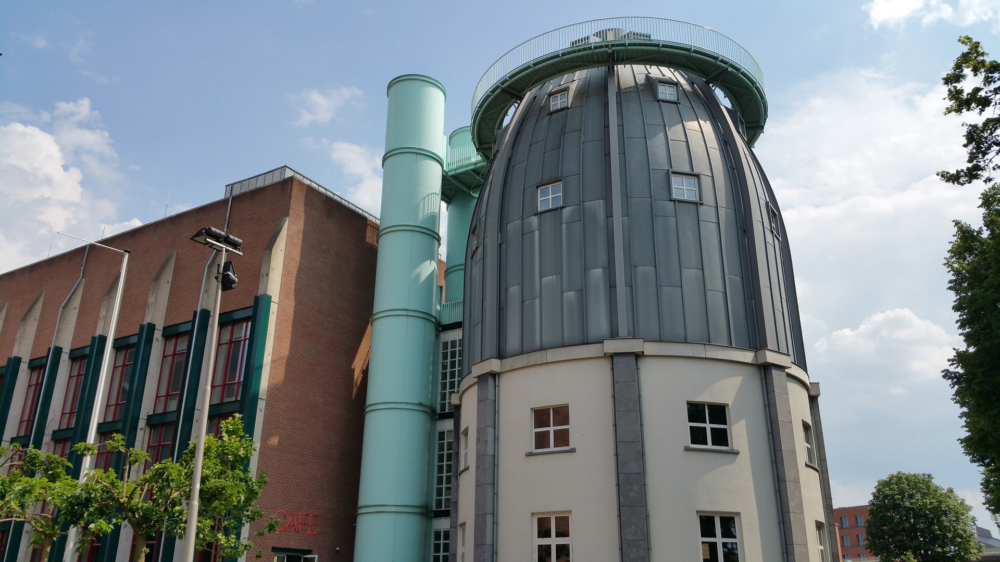

plan your next adventure
SWITZERLAND


Switzerland is a place where they don’t like to fight, so they get people to do their fighting for them while they ski and eat chocolate . Switzerland, Europe’s mountain playground, is a classic tourist draw that remains consistently popular. Visitors from the world over travel here to ascend the slopes of the Alps, breathe the crisp air, and feel on top of the world. When they come down from the mountains, they find thriving, cosmopolitan cities that are steeped in history and culture.
MAASTRICHT
Moons of ache glowed in spaces of her meat and when she moved the moons banged together and stunned. Then he took me to look at the Maastricht animal, still today one of the world's most famous fossils. (Though the Netherlands has repeatedly asked for it back, the French have held on to it for more than two hundred years.)The fatter we are, the more likely we are to get cancer and the more likely we are to become demented as we age.SANTORINI